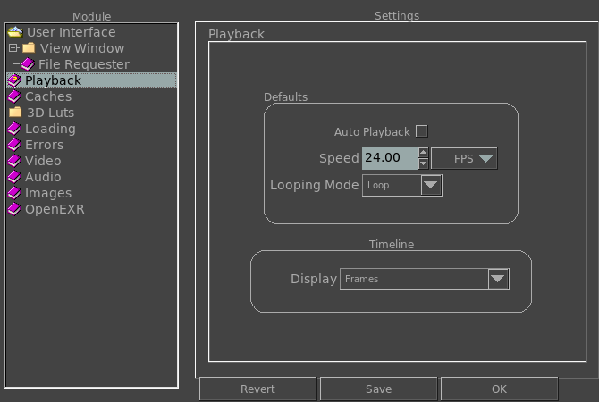

|  |
When this option is turned on, as soon as mrViewer loads all the files, it will try to start playing them. As other defaults, you can change the default speed (FPS) of the timeline as well as its looping mode. The FPS of the timeline only takes effect on sequences, not videos which already have an encoded FPS. When Override FPS is inactive, the FPS is attempted to be extracted from the image metadata (EXR, DPX) and from the resolution and aspect ratio (all other formats). If that fails, then this preference setting is used. If Override FPS is active, it overrides any other FPS with the preference setting.
This option controls how scrubbing works. Smaller increments mean less travel of the mouse to skip a frame, while higher increments mean much more travel of the mouse to change the frame.
The Display section allows
you
to toggle how the timeline displays the time. It can be in frames, seconds, time, Drop Timecode, Non-Drop Timecode.
The Selection section allows
you
to toggle how the timeline displays the frame range set with the Start and End buttons ( or the I and O shortcuts ). It can display it as a highlited section in the full timeline, or as a section of the timeline.
|